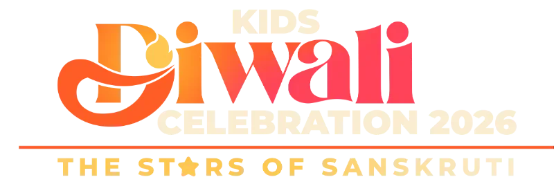

Kids Diwali 2026 has finished
Thank you for celebrating with us at BAPS Shri Swaminarayan Mandir, Sydney. Jay Swaminarayan!
Go to BAPS SydneyTaking you to the BAPS Sydney page in 6 seconds…

Thank you for celebrating with us at BAPS Shri Swaminarayan Mandir, Sydney. Jay Swaminarayan!
Go to BAPS SydneyTaking you to the BAPS Sydney page in 6 seconds…